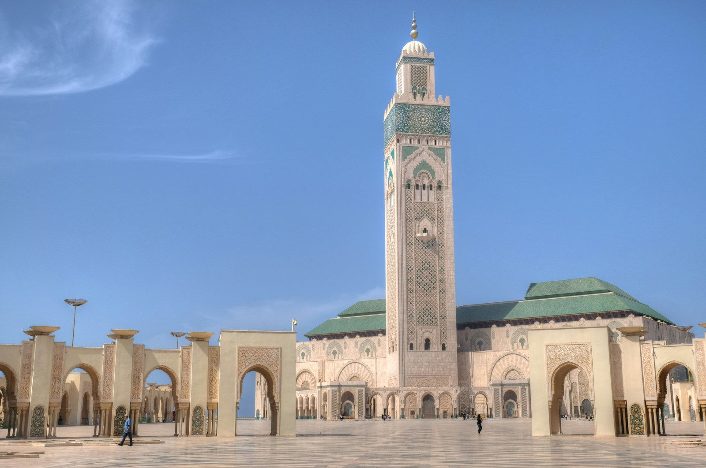

⚡ Casablanca & Grand Circuit Highlights
- Hassan II Mosque VIP Visit: Tour North Africa’s largest mosque, featuring a 210-meter minaret and a floor built directly above the Atlantic ocean swell.
- Seamless CMN Airport Pickup: Avoid airport taxi queues; your chauffeur meets you the moment you exit customs with your private vehicle.
- Capital Heritage in Rabat: Explore the oceanfront Kasbah of the Oudayas, Hassan Tower, and the Royal Mausoleum of Mohammed V.
- Full Moroccan Loop: Effortlessly link Casablanca → Rabat → Chefchaouen → Fes → Merzouga Sahara → Marrakech with zero back-tracking.
- Rick’s Café Experience: Enjoy an atmospheric evening cocktail in the legendary recreation of Humphrey Bogart’s film bar.
Your Gateway to the Kingdom of Morocco
Casablanca is where most long-haul flights from North America, Europe, and Australia touch down. While many tour agencies rush travelers through on generic schedules, starting your journey in Casablanca with a private chauffeur offers unparalleled flexibility.
You begin with the marvel of modern Islamic architecture—the Hassan II Mosque, where hand-carved marble and cedarwood honor centuries of artisanal mastery. From there, your private vehicle charts an unhurried course northward to the royal capital of Rabat and the blue streets of Chefchaouen, before venturing south into the imperial medinas and the Sahara dunes.
"Starting in Casablanca gives travelers the true narrative arc of Morocco: beginning at the modern Atlantic coast, journeying into the ancient medieval medinas, and culminating in the silence of the Saharan sands."
— ROAM MOROCCO ITINERARY DIRECTORYBecause your vehicle and driver remain exclusively with you throughout the entire route, you enjoy luggage security, total route flexibility, and zero transit stress.
Sample 8-Day Grand Circuit from Casablanca POPULAR FOR US & UK TRAVELERS
CMN Airport Arrival → Hassan II Mosque → Imperial Rabat
Meet your private chauffeur at Casablanca Airport. Visit the monumental Hassan II Mosque right by the sea. Continue 1 hour north to Rabat, the diplomatic capital. Explore the white-and-blue Oudayas Kasbah and the unfinished 12th-century Hassan Tower before relaxing at your luxury riad.
Rabat → Chefchaouen (Rif Mountains) → Fes el-Bali
Drive through the scenic Rif Mountains into Chefchaouen. Spend the afternoon photographing the blue alleys and artisan shops. On Day 3, continue south past the Roman ruins of Volubilis to reach Fes for a full guided day exploring the ancient medina, madrasas, and Chouara tanneries.
Fes → Ziz Valley → Erg Chebbi Glamping → Dades Valley
Cross the Middle Atlas cedar forests, greeting wild Barbary apes in Azrou. Descend through the dramatic Ziz Gorge into the dunes of Erg Chebbi. Experience sunset camel rides and sleep in a luxury desert tent. Continue through Todra Gorge into the dramatic Kasbah canyons of Dades Valley.
Aït Benhaddou → High Atlas → Marrakech (or CMN Return)
Tour the UNESCO fortress of Ksar Aït Benhaddou, cross the scenic Tizi n'Tichka pass, and spend your final two days exploring Marrakech’s palaces, Majorelle Gardens, and vibrant souks. Departure transfer back to Marrakech (RAK) or Casablanca (CMN) airport.
What's Included in Your Casablanca Grand Tour
✔ INCLUDED
- Dedicated private air-conditioned vehicle throughout the entire tour
- Professional English-speaking Berber chauffeur
- All vehicle fuel, highway tolls, and parking fees
- Handpicked luxury riad & hotel accommodations with breakfast
- Luxury Sahara desert camp with private en-suite tent & dinner
- Private licensed local guides in Fes & Marrakech
- Sunset camel trek in Erg Chebbi
- Airport pickup (CMN) and departure transfer
✕ NOT INCLUDED
- International flights
- Mid-day lunches and alcoholic beverages
- Discretionary tips for guides and chauffeur
- Personal travel insurance
Frequently Asked Questions: Tours from Casablanca
Can our tour end in Marrakech instead of Casablanca?
Yes! Many international travelers book open-jaw flights: arriving in Casablanca (CMN) and departing from Marrakech Menara Airport (RAK). We design your itinerary to finish directly at Marrakech airport with zero backtracking.
How flexible is the daily schedule during the tour?
Because your tour is 100% private, you control the pace. If you wish to sleep in an extra hour, stop at roadside cafes, or spend longer taking photos, your chauffeur is entirely at your service.